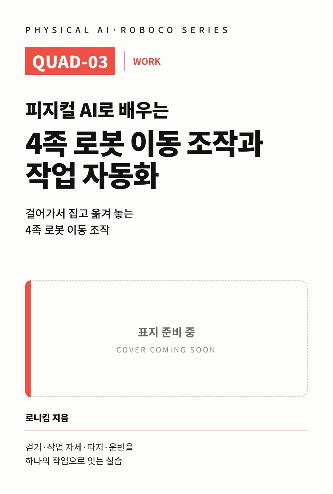

출간 예정 가제
피지컬 AI로 배우는 RoboCo · QUAD-03 · WORK
걸어가서, 집고, 옮겨 놓는다
네 다리 로봇이 걸어가서 작업 자세를 만들고, 물체를 집어 다른 위치에 놓는다.
완성된 로봇을 먼저 실행하고, 움직임을 관찰하고, 구조를 이해한 뒤 값과 동작을 바꿔 결과를 비교합니다. 실패하면 원인을 찾아 한 조건만 고쳐 미션을 완성합니다.
이동과 조작을 어떻게 하나의 작업으로 연결하는가?
이 책에서 해낼 것
대표 미션 — 네 다리 로봇이 걸어가서 작업 자세를 만들고, 물체를 집어 다른 위치에 놓는다.
이 책의 사용법
- 걷기·작업 자세·파지·운반을 따로 확인한 뒤 연결한다.
- 물체를 잡는 성공과 전체 작업 성공을 구분한다.
- 몸통 자세와 로봇팔 자세는 한 번에 하나씩 비교한다.
대표 로봇: 4족 로봇 + 로봇팔 + Claw
4족 로봇의 몸통 위에 로봇팔과 집게를 얹었습니다. 걷기·작업 자세·파지·운반·놓기·복구를 각각 확인한 뒤 하나의 작업 흐름으로 연결합니다.
5 PART · 25 CHAPTER
- 완성 로봇 실행
- 움직임 관찰
- 구조 이해
- 값과 동작 변경
- 결과 비교
- 실패 원인 확인
- 미션 완성
- PART 1 · EXPERIENCE직접 움직여 보기
걸어가서 물체를 옮기는 첫 작업 — 걷는 로봇이 물체를 옮기는 첫 순간 · 앞 권의 로봇팔 동작 이어 쓰기 · 서 있는 자세에서 물체 잡기 외 CH01~05
- PART 2 · UNDERSTAND움직임의 구조 이해
걷는 몸통과 로봇팔이 함께 움직이는 이유 — 4족 몸통과 로봇팔 장착 위치 · 몸을 기울이면 손끝은 어디로 갈까 · 잡을 때와 옮길 때 왜 자세가 달라질까 외 CH06~10
- PART 3 · CONTROL값과 동작 제어
걷기·자세·로봇팔을 하나의 작업으로 연결하기 — 걷기에서 작업 정지로 전환하기 · 물체를 잡기 좋은 자세 만들기 · 몸과 팔이 함께 물체에 다가가는 법 외 CH11~15
- PART 4 · EXPERIMENT조건 변경과 결과 비교
물체를 놓치지 않고 걷기 — 몸통 높이가 달라지면 물체를 더 잘 잡을까 · 팔을 접으면 왜 더 안정적으로 걸을까 · 파지 힘과 운반 성공 비교 외 CH16~20
- PART 5 · PROJECT미션 완성 및 개선
4족 로봇 이동 작업 자동화 프로젝트 — 전체 작업의 상태 만들기 · 걷기·접근·작업 순서 만들기 · 잡기·운반·이동 순서 만들기 외 CH21~25
시리즈에서 QUAD-03의 위치
QUAD-03는 4족 로봇을 확장하는 QUAD 트랙의 책입니다. 대응 개념은 CORE-03에서 이어집니다.

지금 만날 수 있는 시리즈 첫 권
피지컬 AI로 배우는 RoboCo 로봇 구조와 Python 제어
키보드 조종부터 스크립트 주행까지, 직접 움직이고 바꾸는 4륜 로봇 — 입력·제어·움직임·관찰의 흐름은 시리즈 모든 권의 바탕이 됩니다.
도서 정보
| 도서명 | 피지컬 AI로 배우는 4족 로봇 이동 조작과 작업 자동화 가제 |
|---|---|
| 시리즈 | 피지컬 AI로 배우는 RoboCo · QUAD-03 (WORK) |
| 저자 | 로니킴 |
| 실습 환경 | RoboCo (Steam) |
| 출간 상태 | 출간 예정 출간 일정은 이 페이지에서 안내합니다. |